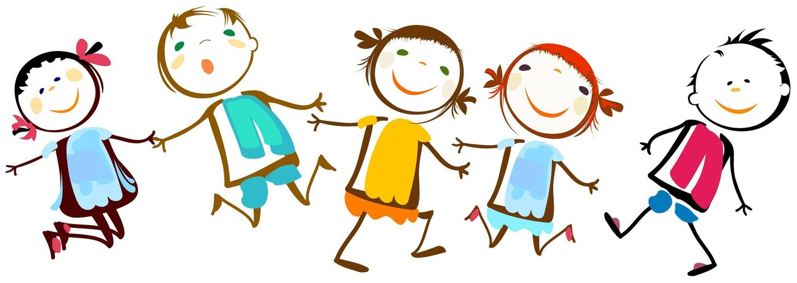

Івано-Франківськ · вул. Гната Хоткевича, 52-А
Навчання і реабілітація в одному місці
НРЦ «Оберіг» навчає дітей з особливими освітніми потребами, зокрема з порушеннями опорно-рухового апарату. Уроки поєднуємо з фізичною терапією, корекційними заняттями та психологічною підтримкою.
- Комунальний заклад
- Навчання безоплатне
- Безбар'єрне середовище
Про НРЦ «Оберіг»
Кожна дитина вчиться у своєму темпі
НРЦ «Оберіг» — комунальний заклад Івано-Франківської міської ради для дітей з особливими освітніми потребами. Ми поєднуємо загальну середню освіту з комплексною реабілітацією, щоб навчання й відновлення йшли поруч, а не конкурували за час дитини.
Над кожною дитиною працює команда: вчителі, асистенти, фізичні терапевти, логопеди, психологи. Разом із батьками вони складають індивідуальну програму розвитку і переглядають її впродовж року.
-
Дошкільне відділення
Групи для дітей дошкільного віку: розвиток, корекційні заняття і реабілітація з раннього віку, підготовка до школи.
-
Навчання
Загальна середня освіта за освітніми програмами НУШ, адаптованими до потреб кожного учня.
-
Фізична реабілітація
Фізична терапія та ерготерапія: рух, координація, навички самообслуговування.
-
Корекційна допомога
Логопедичні та корекційно-розвиткові заняття індивідуально і в малих групах.
-
Психологічна підтримка
Консультації для дітей і батьків, адаптація до навчання, розвиток соціальних навичок.
Життя НРЦ «Оберіг»
Новини
Прозорість та відкритість
Документи НРЦ «Оберіг»
Оприлюднюємо документи відповідно до статті 30 Закону України «Про освіту» не пізніше ніж через 10 робочих днів після затвердження.
Усі документиБезпека та захист
Якщо дитину кривдять, є кому допомогти
Повідомити про булінг можна класному керівнику, психологу або директору НРЦ «Оберіг». Заяви розглядаємо конфіденційно.
- 116 111Національна дитяча гаряча лінія, безкоштовно
- 1547Урядова лінія: насильство, булінг, торгівля людьми
- 0 800 50 17 20Уповноважений Верховної Ради з прав людини
- 102Національна поліція
Запрошуємо
У НРЦ «Оберіг» кожна дитина серед друзів
Діти вчаться, граються і займаються разом, а фахівці дбають, щоб кожному було комфортно. Розкажемо, як вступити до НРЦ «Оберіг», і відповімо на ваші запитання.

Разом із нами
Наші спонсори
Дякуємо всім, хто підтримує дітей НРЦ «Оберіг». Звіти про отриману допомогу оприлюднюємо в розділі «Прозорість та відкритість».
- Логотип спонсора
- Логотип спонсора
- Логотип спонсора
- Логотип спонсора
- Логотип спонсора
- Логотип спонсора
Логотипи — приклад. Справжні з'являться після погодження зі спонсорами.
Контакти
- Адреса
- вул. Гната Хоткевича, 52-А, м. Івано-Франківськ, 76020
- Телефон
- (0342) 55-05-24
- Електронна пошта
- nrts.oberih@osvita.if.ua
- Директор
- Шестопалова Галина Любомирівна